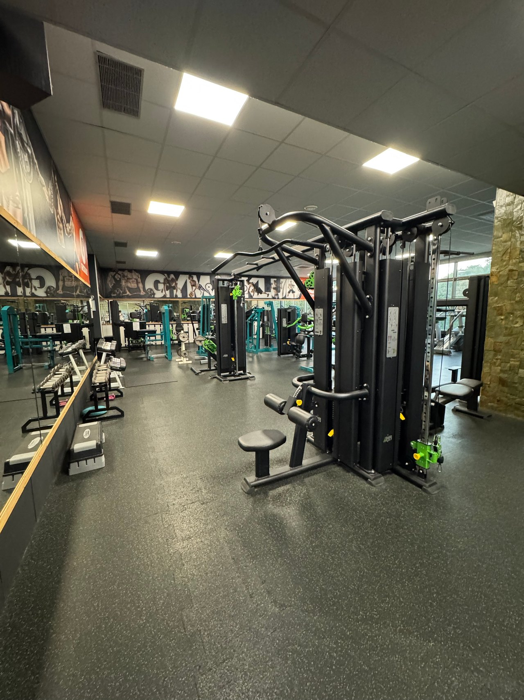
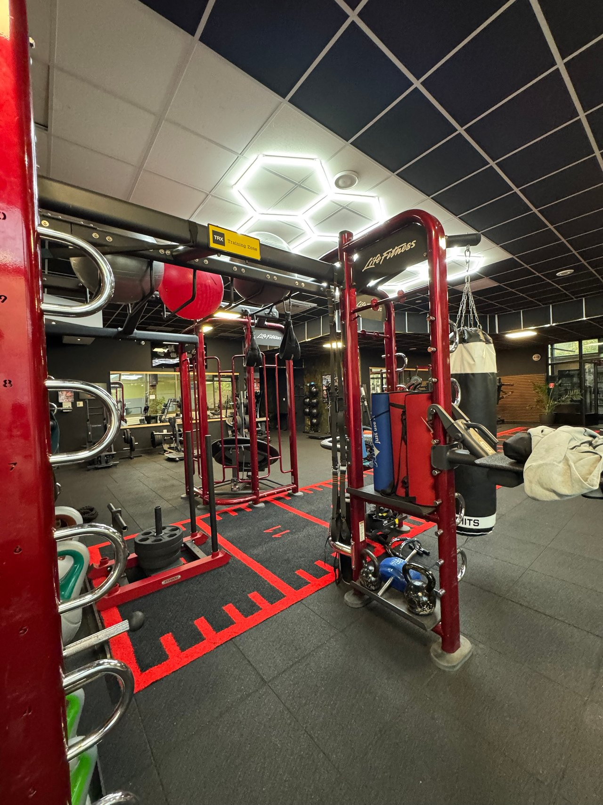
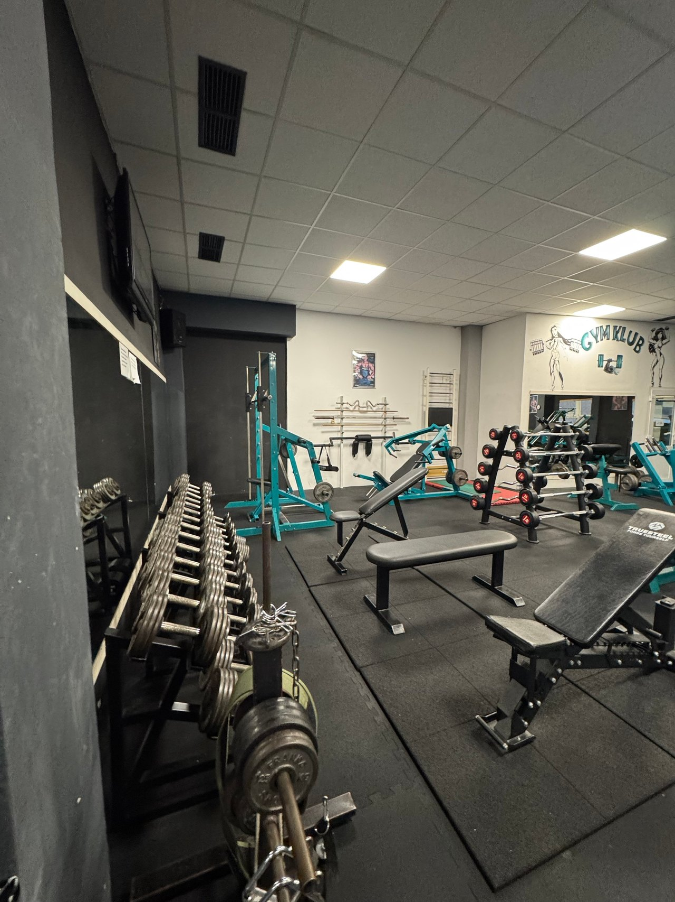
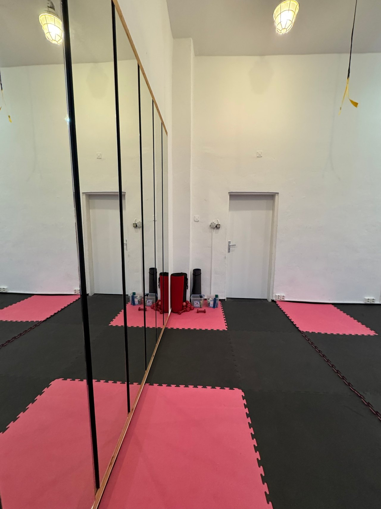
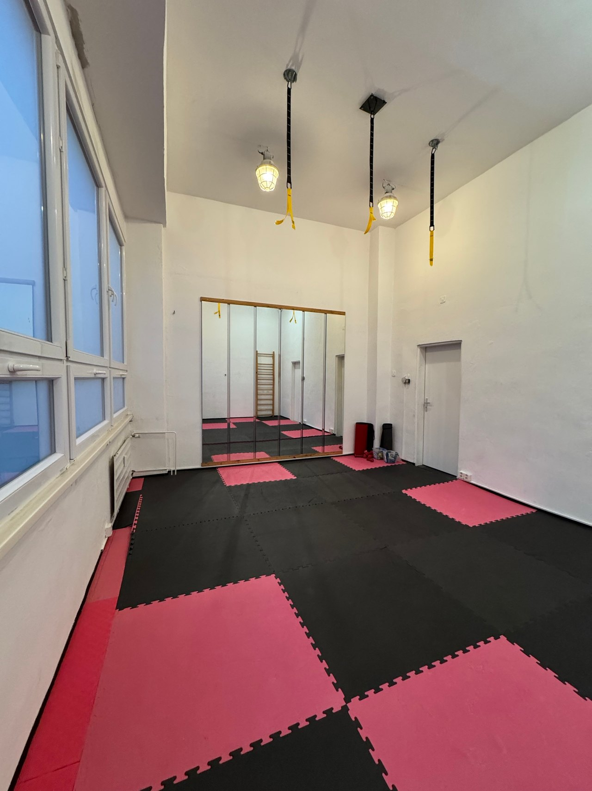
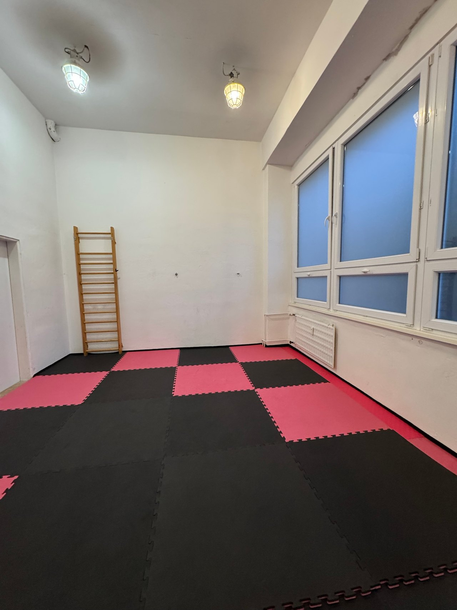
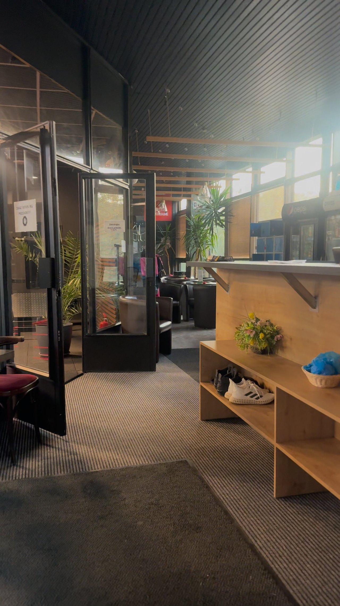

Každý deň počas otváracích hodín
Fitness tréning
Samostatný silový tréning na strojoch, s voľnými váhami a na kardio zariadeniach. Na samostatný tréning sa netreba objednávať.

Služby a tréneri
Fitness tréning je voľne prístupný počas otváracích hodín. Osobný tréning si dohodnete s trénerom, bojové športy a lekcie sú v pevných časoch.

Každý deň počas otváracích hodín
Samostatný silový tréning na strojoch, s voľnými váhami a na kardio zariadeniach. Na samostatný tréning sa netreba objednávať.

Termín podľa dohody s trénerom
Diagnostika pohybu, správna technika, tréningový plán a jedálniček podľa cieľa. Tréneri pripravia aj na súťaž vo fitness a silovom trojboji.

Ut 17:00 – 19:00 · Št 17:00 – 19:00 · So 13:00 – 15:00
MMA, Jiu Jitsu a Luta Livre (no-gi, bez kimona) s Michalom Šášikom a jeho klubom Panda Fight Club. Postoj s prvkami boxu, kickboxu a juda, na zemi páky, škrtenia a obrana proti nim. Začať sa dá od úplných základov.

Po 17:00 – 18:30
Praktická sebaobrana s Tomášom Židekom a Slavom Jurom. Jednoduché techniky pre reálne situácie, bez predchádzajúcich skúseností.

Ut 18:00 – 19:00 · Št 18:00 – 19:00
Cvičenie s Nikol Molnárovou: posilnenie trupu, správne držanie tela a uvoľnenie stuhnutých svalov. S malými činkami a na karimatke, vhodné aj pri sedavej práci.

Po 16:00 – 17:00 · St 18:00 – 19:00
Pilates s Majkou Navrátilovou pre stabilitu, mobilitu a pevný stred tela. Pokojnejšie tempo a presné prevedenie.

Podľa dohody
Analýza telesného zloženia a stravovací protokol s Jaroslavom Šoltísom, výživové poradenstvo aj u Mgr. Tomáša Králika.
Rozvrh
Na lekciu príďte podľa rozvrhu, prvýkrát stačí športové oblečenie a voda. Doplniť: aktuálny rozvrh lekcií od prevádzky, teraz podľa gymklub.sk (27. 9. 2026)
Fitness počas otváracích hodín
Fitness počas otváracích hodín
Tréneri
Osobný tréning dohodnete priamo s trénerom. Ak telefón nie je uvedený, pomôžu na recepcii alebo na čísle +421 944 800 394. Doplniť: zoznam aktívnych trénerov a ich fotky; menu a stránka trénerov na gymklub.sk sa líšia
Bojové športy · Panda Fight Club
MMA, Luta Livre a Jiu Jitsu. Postoj s prvkami boxu, kickboxu a juda, na zemi páky a škrtenia.
0905 930 597Fitness
Výživové poradenstvo, kondičný tréning, box, MMA a grappling (fialový pás v BJJ).
0908 484 155Fitness
Prevencia zranení, mobilita, správna technika, tréningový plán a strava podľa cieľa.
Kontakt na recepcii
Fitness
Majster Slovenska a Československa v športovej kulturistike. Kulturistika, fitness a jedálniček.
0907 736 944Krav Maga
Lekcia Krav Maga v pondelok 17:00 – 18:30.
0903 776 825Krav Maga
Inštruktor Krav Maga.
+421 903 616 451Zdravý chrbát
Posilnenie trupu, správne držanie tela, uvoľnenie stuhnutých svalov. Vhodné pre začiatočníkov.
+421 948 899 131Pilates
Lekcie pilatesu v pondelok a v stredu.
+421 907 795 803Fitness
Osobné fitness tréningy.
0902 203 379Nutričné poradenstvo
Výživa a stravovanie.
Kontakt na recepcii
Napíšte, čo chcete dosiahnuť, a odporučíme lekciu alebo trénera. Prvýkrát stačí športové oblečenie a voda.